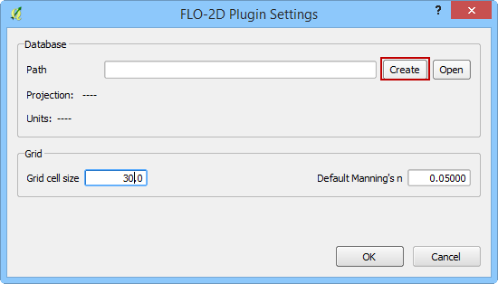

Start a Project¶
Before this project can be completed, it is necessary to get the data.
Download the data installer.
Extract the data installer.
Run the data installer.
https://flo-2d.sharefile.com/share/view/s3eefbdb43e244a68
In the example below, it is assumed that user is generating a hydraulic model from scratch. First step to build a model, is to create a new database, where all the model files will reside.
Creating a new database¶
In QGIS, FLO-2D Plugin click the Settings Button

A new window will appear:

Click Create
In the new window,
3. Type in the database name and hit Save 3. Select the projection in the next window * Set the default Grid cell size and the Manning’s n
Click OK
As you can see, based on the projection, the plugin sets the appropriate unit (meters or feet).